A compiler transforms and translates a high-end language to machine (low level) understandable language. The compiling process does basic translation mechanisms and also error detection. Basically, it translates your code written in basic English to a language the machine can understand and perform according to the given command.
To write this code you need a platform integrated with the compilers known as IDE (Integrated Development Environment). Some examples of C IDEs are:
❖ Code::Blocks: It is a free, open-source cross-platform IDE that supports multiple compilers including GCC, Clang and Visual C++.
Download Link: http://www.codeblocks.org/downloads
Interface :
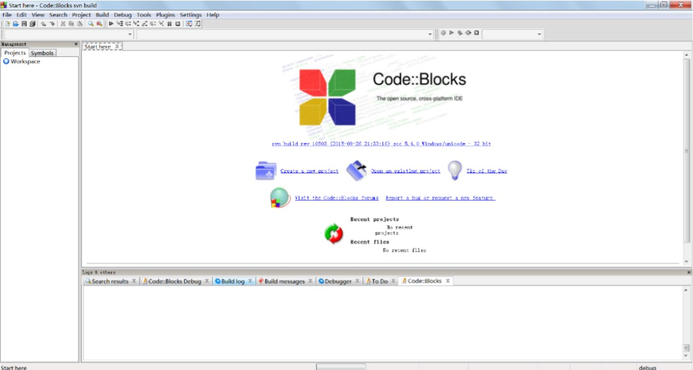❖ Eclipse: It is an integrated development environment used in computer programming. It contains a base workspace and an extensible plug-in system for customizing the environment.
Download Link: http://www.eclipse.org/downloads/
Interface :
As we are now all set to begin with our coding. Lets first discuss what are some important components every C program contains
A variable is nothing but a name given to a storage area that our programs can manipulate. Each variable in C has a specific type, which determines the size and layout of the variable's memory; the range of values that can be stored within that memory; and the set of operations that can be applied to it.
There are some rules that are to be followed during construction of a variable:
Example of some valid variable names: _emp_, Abc123, book_212 etc;
Constants in C are the fixed values that are used in a program, and its value remains the same during the entire execution of the program. Constants are also called literals. Constants can be any of the data types. These are basically the values specified for a given variable at a particular point of time.
ExamplesX=5 or y=10.34
Here x and y are the variable names and the values given to them i.e. 5 and 10.34 are the constants specified to them.
Keywords are predefined, reserved words in C language and each of which is associated with specific features. These words help us to use the functionality of C language. They have special meaning to the compilers.
Some examples of keyword are: int, float, break, while, double continue, etc.
A header file is a file with extension “.h” which contains C function declarations and macro definitions to be shared between several source files. There are two types of header files: the files that the programmer writes and the files that comes with your compiler.
It is the most important part of the code and is usually written at the very beginning of the code.
Including a header file gives access to all the keywords and pre-defined functions listed in the file.
You request to use a header file in your program by including it with the C pre-processing
directive #include.
Syntax-
#include
Some mostly used header files in C are:
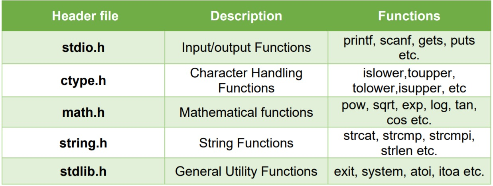
Each variable in C has an associated data type. Each data type requires different amounts of memory and has some specific operations which can be performed over it.
Following are the examples of some very common data types used in C:
The format specifiers are used in C for input and output purposes. Using this concept, the compiler can understand that what type of data is in a variable during taking input and printing data. A list of data types and their format specifiers:
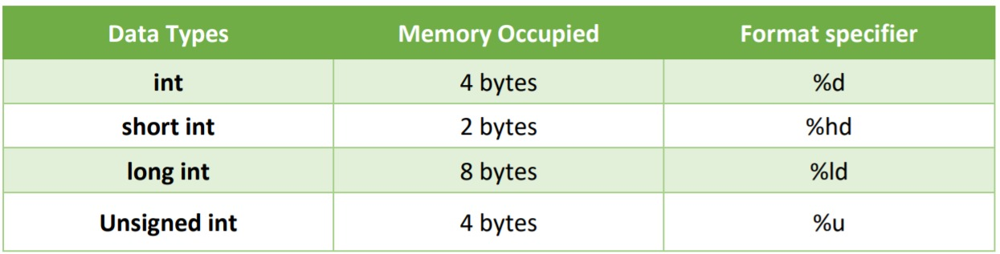 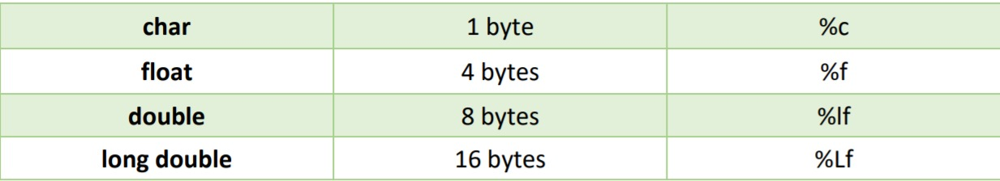When we say Input, it means to feed some data into a program. An input can be given in the form of a file or from the command line and an Output, means to display some data on screen, printer, or in any file. C programming provides a set of built-in functions to read the given input and functions to output the data on the computer screen.
In C programming, printf() is one of the main output function. The function sends formatted output to the screen.
Syntax: printf(“ out put data “);
Example:
printf(“ First statement “); // it will give the output as the text included in the quotes.
To print the value of a variable or include variables in your output you have to specify the format specifier for the data type.
Syntax: printf(“ output data characters format_specifier “,variable_name);
Example:
int x=10;
printf(“The value of x is %d”,x);
Output: The value of x is 10
In C programming, scanf() is one of the commonly used function to take input from the user.
The scanf() function reads formatted input from the standard input such as keyboards.
To read the value of a variable you need to specify the format specifier of the variable data type and then the variable name preceded by the “&” sign.
Syntax : scanf(“Format_specifier”,&variable_name);
&variable_name gives the address of the variable and the input value is stored at that address.
Example:
float x;
printf(“Enter the value of x”);
scanf(“%f”,&x);
When this statement is run, it will ask the user to input the value of float variable x.
After studying the components of a C program, we are all set for First code. Before that let’s go through some rules that you should keep in mind whenever we are writing a code: -Each instruction should be written as a separate statement
Thus, for our 1st program we are going to print the statement “HELLO WORLD!!”;
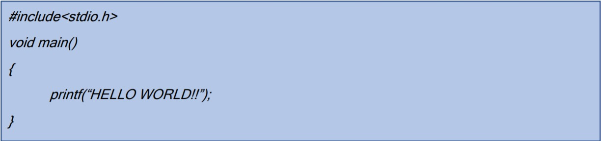Error is an illegal operation performed by the user which results in abnormal working of the program.
Programming errors often remain undetected until the program is compiled or executed. Some of the errors inhibit the program from getting compiled or executed. The most common errors can be broadly classified as follows:
Comments are statements that are not executed by the compiler and interpreter. In programming, a comment is a programmer-readable explanation or annotation in the source code of a program. It is a good practice as a programmer to write comments as it makes a program more readable and error finding become easier.
In C there are two types of comments:
int emp_no=1245; // the employee no. is 1245
/*Comment starts
. . .
Data/text
. . .
Comment ends*/
Generally, an escape sequence begins with a backslash ‘\’ followed by a character or characters. it has a special meaning to the compiler. Escape sequences are used to format the output text and are not generally displayed on the screen. Each escape sequence has its own predefined function. Some common and useful escape sequences you can take note of are:
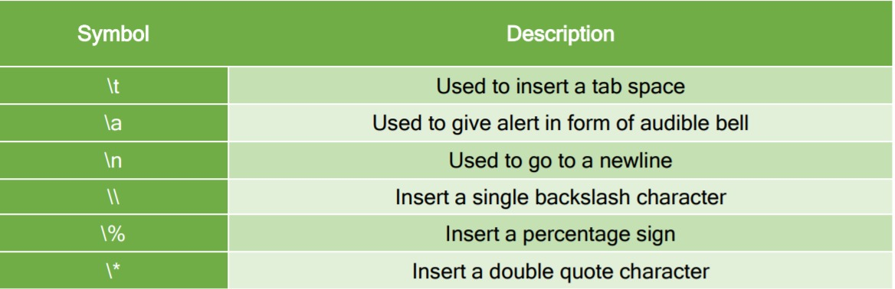Escape sequences store only 1 byte in memory and can be used the same way we print any output on Console by inserting them wherever required in the printf function.
C language supports a rich set of built-in operators. An operator is a symbol that tells the compiler to perform a certain mathematical or logical manipulation. Operators are used in programs to manipulate data and variables. C operators can be classified into following types:
All the basic arithmetic operators are supported in C.
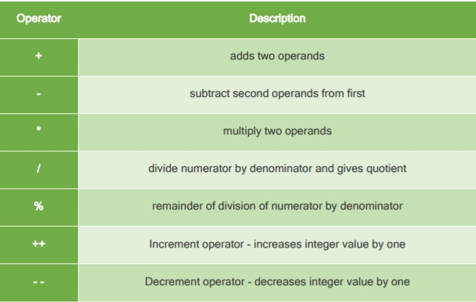Operators used to compare the two operands. Such as:
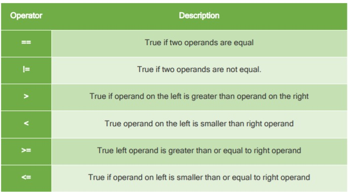C language supports following 3 logical operators.
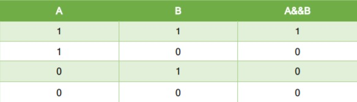
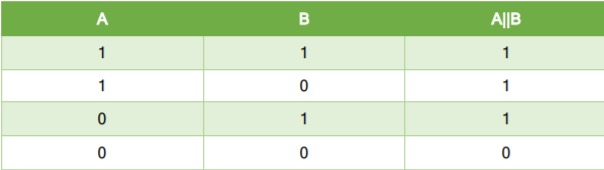
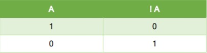
Used to assign values to variables. Example
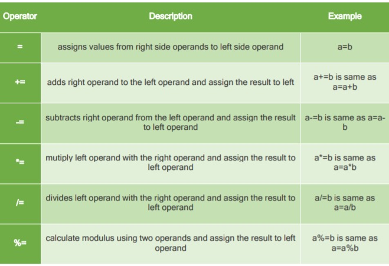Now that we have learned about all the operators and data types and variables. Let’s write a code performing different arithmetic operations on variables.
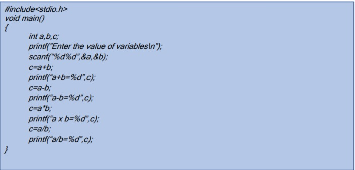